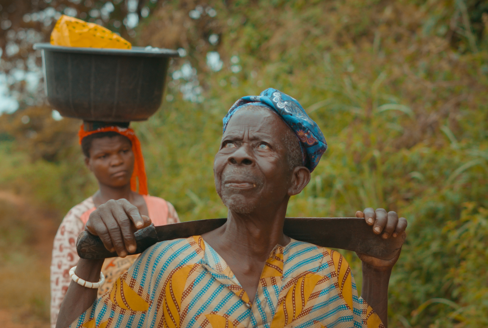

The documentary raises intriguing questions about the role of the gods in blessing people with twins,
or whether it is a case of covering curses in a beautiful foil of blessing. Does this blessing of twins
truly come from the gods, or is there more to this mystery than meets the eye? This captivating
documentary invites viewers to ponder the intricate relationship between science, food, culture, and
spirituality in shaping their world and our own.
